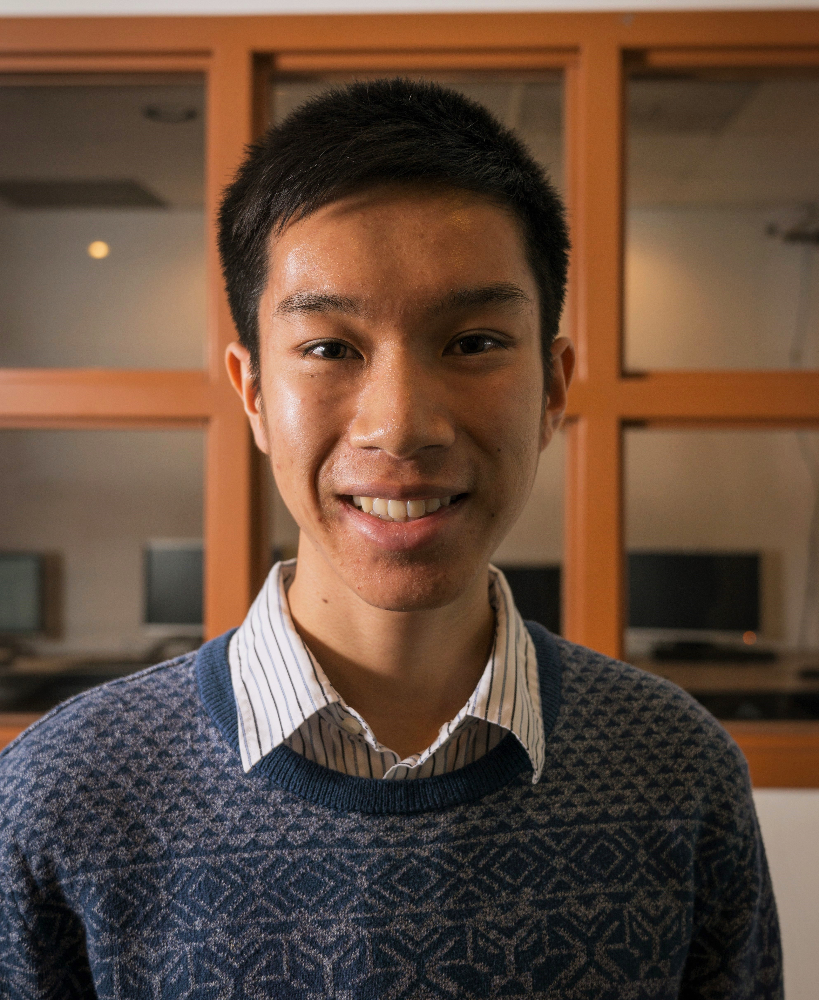

Christopher Thai

Computer Science nerd. Avid PC gamer. Runner. Food enthusiast
Computer Science nerd. Avid PC gamer. Runner. Food enthusiast
Hi, my name is Chris Thai. I am a 2nd year computer science and engineering major at UCLA
I'm from Sunnyvale, CA, smack dab in the middle of Silicon Valley.
Some of the organizations at UCLA I'm involved with are:
You can find my resume here, and my Linkedin, GitHub, and Facebook can be found below.